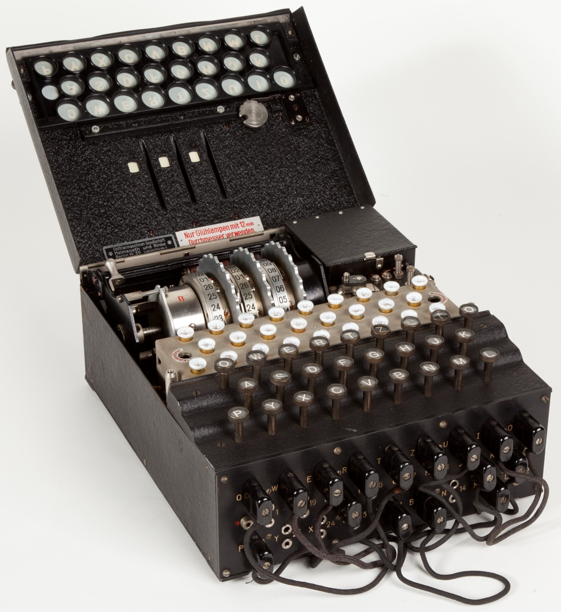
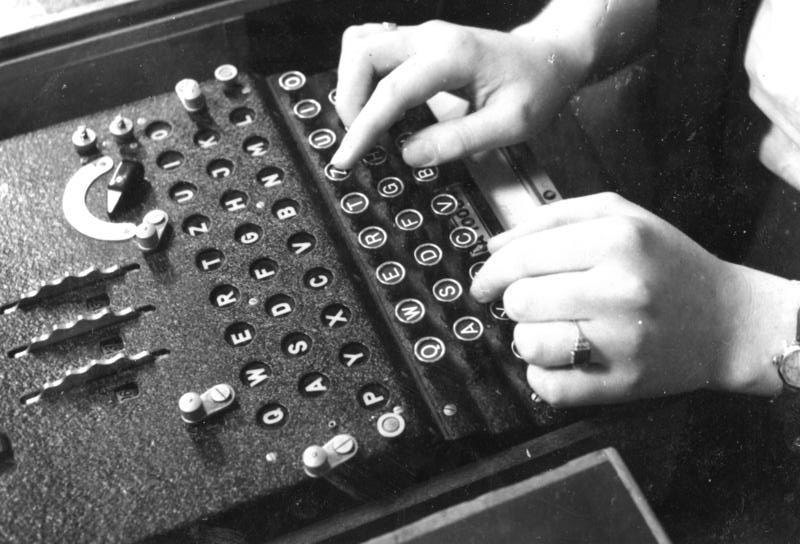
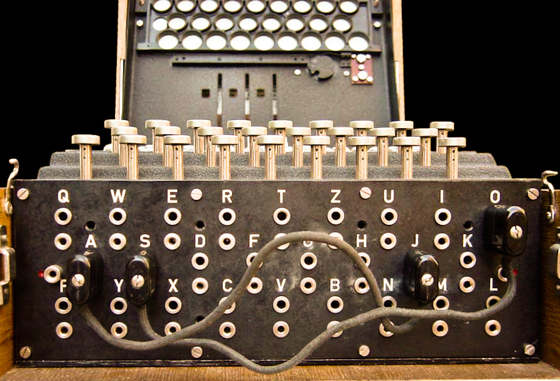

Follow Enigma from a promising commercial privacy machine to one of the most famous codebreaking
challenges of World War II.
After World War I: A Machine With a Promise
Imagine sitting in an office in the early 1920s.
The Great War is over. Businesses are growing. Governments are exchanging sensitive information. Messages
travel farther and faster than ever before, but there is a problem. Anyone listening along the way might be
able to read them.
On a desk in front of you sits a strange wooden box. Brass hardware catches the light from the window. A
keyboard waits beneath your fingertips. Above it is a panel of letters that glow one at a time.
This is Enigma.
Its inventor did not build it for war. The machine was originally marketed as a way to protect commercial
secrets. Banks, companies, and diplomats could send messages that appeared to be meaningless strings of
letters to anyone without the proper machine.
Each key press caused gears and electrical contacts inside the box to shift. The machine never seemed to
encrypt a letter the same way twice. To many observers, it felt almost magical.
At the time, few people realized this curious device would become one of the most famous machines in military
history.

Early commercial Enigma model.
1920s–1930s: The Military Takes Notice
Now imagine you are a German communications officer.
A radio message arrives from headquarters.
The room smells faintly of machine oil and warm electronics. The radio crackles beside you. On the desk sits
an improved version of the Enigma machine. It looks ordinary enough, yet entire military operations depend on
it.
Before your shift begins, you unlock a secret key sheet.
Today's settings are listed in neat columns.
A specific rotor order.
Specific starting letters.
Specific plugboard connections.
You carefully arrange the machine to match.
Click.
Click.
Click.
The rotors slide into place.
If every operator across the military follows the same instructions, thousands of people separated by
hundreds of miles can communicate securely. A submarine commander in the Atlantic and an officer in Berlin can
read the same message, even though nobody speaks directly about the settings over the air.
That shared secret is what makes the system work.

German communications context and Enigma setup.
Daily Keys: Staying in Sync
Picture two operators.
One sits aboard a submarine rolling through dark Atlantic waves. Another sits in a command building far
inland.
They will never meet.
Yet every morning they open identical key sheets and prepare their machines the same way.
No phone call is needed.
No radio message announces the settings.
The information was distributed beforehand and guarded carefully.
As long as both operators follow the instructions exactly, the machines remain synchronized.
A single mistake can cause chaos.
One rotor in the wrong position.
One plugboard cable connected incorrectly.
One letter set wrong in a rotor window.
Suddenly the message becomes unreadable.
For the operators, accuracy is everything. Every setting matters.
Every letter matters.
Every message begins with trust that someone far away has prepared their machine exactly as you have.
Enigma Machine main components.

Rotor window letters used to set starting positions.
Breaking Enigma: The Hunt Begins
Now switch sides.
You are no longer the operator sending messages.
You are trying to read them.
Every day, thousands of encrypted German transmissions cross the airwaves. The messages are intercepted by
listening stations, copied onto paper, and rushed to intelligence teams.
What you see looks hopeless.
Columns of random letters.
No words.
No clues.
No obvious pattern.
Yet somewhere inside those letters are military orders, convoy routes, weather reports, and plans for future
operations.
The challenge is not intercepting the messages.
The challenge is understanding them.
Years before the war, Polish mathematicians had already begun finding cracks in Enigma's armor. Their work
gave Allied codebreakers a foundation to build upon.
Later, at Bletchley Park in England, an extraordinary collection of minds gathered in secret.
Mathematicians.
Engineers.
Linguists.
Chess champions.
Crossword experts.
Military analysts.
The buildings buzzed with activity day and night.
Typewriters rattled.
Telephones rang.
Papers piled high on desks.
Outside, the war continued.
Inside, another battle was being fought. A battle against mathematics, probability, and time itself.
The Allies did not defeat Enigma because the machine was weak.
They defeated it because humans are predictable.
Weather reports followed familiar formats.
Operators sometimes reused procedures.
Certain phrases appeared again and again.
A message might end with a routine military greeting. Another might contain wording that analysts expected to
see.
These small clues became footholds.
Piece by piece, possibility by possibility, codebreakers narrowed the search.
Machines called Bombes helped test enormous numbers of settings far faster than a human could manage alone.
Sometimes a breakthrough came quickly.
Sometimes it took days.
Sometimes lives depended on finding the answer before a convoy sailed into danger.
The struggle against Enigma became one of the most important intelligence efforts of World War II. Many
historians believe the information gained from breaking Enigma shortened the war and saved countless lives.